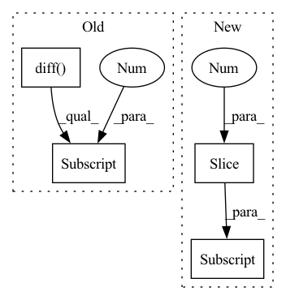

Pattern ID :3500
Before Change
// todo: fix
repetitions = -data_cat[:, -1].diff(-1).fillna(-1)
indices = np.repeat(np.arange(len(data_cat)), repetitions)
repetition_indices = np.where(np.diff(indices, prepend=[-1]) == 0)[0]
data_cat = data_cat[indices]
data_cont = data_cont[indices]
// make replacements
for name, value in self.encoded_constant_fill_strategy.items():After Change
if sequence_length < index.sequence_length:
repetitions = torch.cat([data_cat[1:, -1] - data_cat[:-1, -1], torch.ones(1, dtype=data_cat.dtype)])
indices = torch.repeat_interleave(torch.arange(len(data_cat)), repetitions)
repetition_indices = torch.cat([torch.BoolTensor([False]), indices[1:] == indices[:-1] ])
data_cat = data_cat[indices]
data_cont = data_cont[indices]
// make replacementsIn pattern: SUPERPATTERN
Frequency: 3
Non-data size: 4
Instances Fragment ID: 13393820
Project Name: jdb78/pytorch-forecasting
Commit Name: ff2323bc0a95375eea695d8557edeedadb824949
Time: 2020-06-29
Author: beitner.jan@bcg.com
File Name: temporal_fusion_transformer_pytorch/data.py
M Class Name: TimeSeriesDataSet
N Class Name: TimeSeriesDataSet
M Method Name: __getitem__(2)
N Method Name: __getitem__(2)
M Parent Class: Dataset
N Parent Class: Dataset
M File Name: temporal_fusion_transformer_pytorch/data.py
N File Name: temporal_fusion_transformer_pytorch/data.py
M Start Line: 279
M End Line: 288
N Start Line: 279
N End Line: 287
Before Change
// ddx = torch.diff(torch.diff(x, dim=0), dim=0)[88:268]
y = self.y_data[index]
dy = torch.diff(y, dim=0)[89:269]
ddy = torch.diff(torch.diff(y, dim=0), dim=0)[88:268]
"""
size[index][0] = np.min(diastolic list)
size[index][1] = np.max(systolic list) After Change
"""
d = self.size[index][0]
s = self.size[index][1]
m = self.size[index][2]
info = self.info[index]
o = self.ohe[index]
// m = self.size[index][2].to("cuda")
Fragment ID: 13393823
Project Name: tvs-ai/pytorch_rppgs
Commit Name: 2f8ae9596d527f46726b01a17ad81e601913b3b3
Time: 2023-02-05
Author: forownsake@gmail.com
File Name: vid2bp/BPNetDataset.py
M Class Name: BPNetDataset
N Class Name: BPNetDataset
M Method Name: __getitem__(2)
N Method Name: __getitem__(2)
M Parent Class: Dataset
N Parent Class: Dataset
M File Name: vid2bp/BPNetDataset.py
N File Name: vid2bp/BPNetDataset.py
M Start Line: 18
M End Line: 34
N Start Line: 18
N End Line: 31
Before Change
//
def get_derivative(input_sig):
vpg = np.append(np.diff( input_sig, axis=0) , input_sig[-1] - input_sig[-2])
apg = np.append(np.diff(vpg, axis=0), vpg[-1] - vpg[-2] )
return vpg, apg
After Change
def get_derivative(input_sig):
velocity = np.append(input_sig[1:] , input_sig[-1]) - input_sig
smoothed_vel = gaussian_filter1d(velocity, sigma=3)
acceleration = np.append(smoothed_vel[1:], smoothed_vel[-1]) - smoothed_vel
smoothed_acc = gaussian_filter1d(acceleration, sigma=3) Fragment ID: 13393828
Project Name: tvs-ai/pytorch_rppgs
Commit Name: 0b39906dfe08b771b61ca5df0583a35d9302ea02
Time: 2023-01-20
Author: forownsake@gmail.com
File Name: vid2bp/preprocessing/utils/math_module.py
M Class Name: AnonimousClass
N Class Name: AnonimousClass
M Method Name: get_derivative(1)
N Method Name: get_derivative(1)
M Parent Class:
N Parent Class:
M File Name: vid2bp/preprocessing/utils/math_module.py
N File Name: vid2bp/preprocessing/utils/math_module.py
M Start Line: 15
M End Line: 18
N Start Line: 45
N End Line: 73